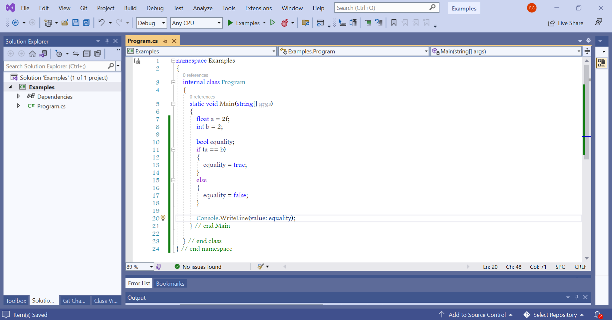
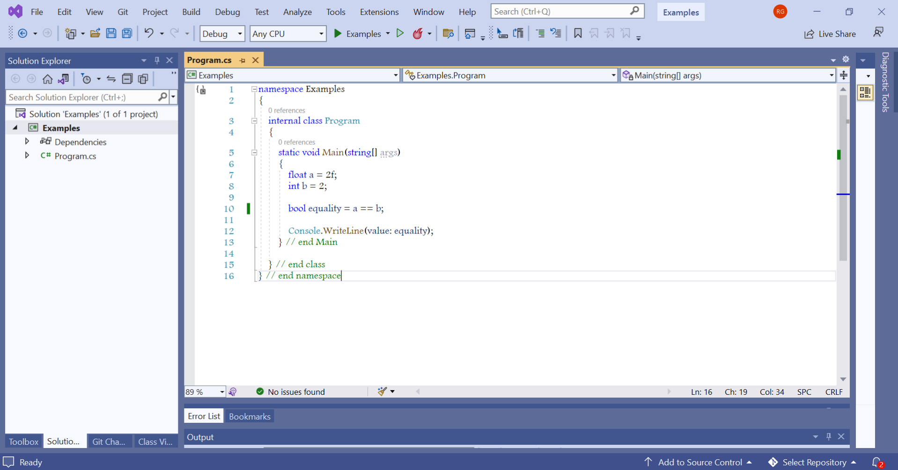

In my experience a common mistake typically made by people new to programming is this, it's a mistake I've absently caught myself making on some occasions, fortunately it is, excluding perhaps for introduced clutter, a harmless mistake.
Unless it's an intentional stylistic choice for some reason, the mistake's this. The code checks for equality, and then uses an if statement to say if the condition is true set a boolean variable to true, or if false set the boolean variable to false. It's redundant and equivalent to the following, and possibly will be compiled into the exact same thing too.

You can more concisely assign the result of the condition check of the if statement to the variable directly, foregoing a lot of extra and redundant lines of code and most likely improving readibility for some.
Even if if the condition being checked is true, and you want the variable to be false then, and vice versa, the same stands just use logical negation, in the specific case of C#(the code in the provided example) the logical negation operator !, or a related such operator.
Using an if statement for assigment of a boolean variable can have a place still though in the case a method call or some other operation will need to be performed as well, only alone is it so definitively redundant to say.
{kind=link}
{kind=link}